This write-up is about the Wireshark Challenge, which is part of Security Blue Team's Introduction to Network Analysis training course.
Link to the course: Introduction to Network Analysis
In this challenge, we are given two .pcap files, the Wireshark capture files, for analysis. We need to find answers to the requested information.
The following is the requested information:
PCAP 1
1. Which protocol was used over port 3942?
2. What is the IP address of the host that was pinged twice?
3. How many DNS query response packets were captured?
4. What is the IP address of the host which sent the most number of bytes?
PCAP 2
1. What is the WebAdmin password?
2. What is the version number of the attacker's FTP server?
3. Which port was used to gain access to the victim Windows host?
4. What is the name of the confidential file on the Windows host?
5. What is the name of the log file that was created at 4:51 AM on the Windows host?
We will begin by analyzing PCAP 1 and then move on to PCAP 2.
Before we begin, we need to have the necessary tools in our arsenal. For this challenge, we only require one tool, which is Wireshark.
You may download Wireshark from here.
Let's open the PCAP 1 file in Wireshark. The file is named as SBT-PCAP1.pcap.
I do not know whether port 3942 is a TCP port or a UDP port. Hence, I wrote the following filter in Wireshark:
tcp.port == 3942 || udp.port == 3942
The following image shows the filtered packets.
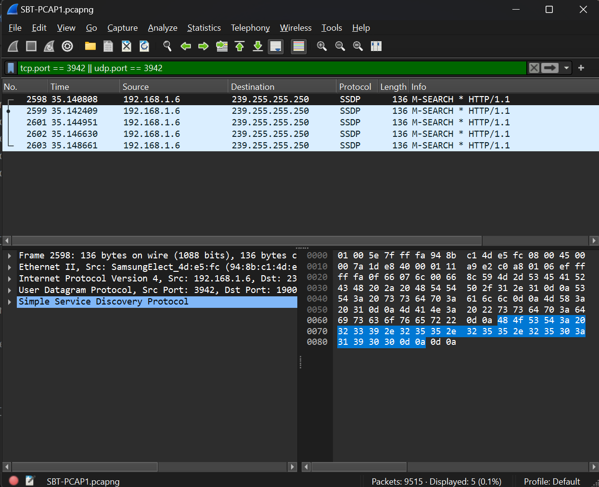Hence, the protocol active on port 3942 is SSDP, otherwise known as Simple Service Discovery Protocol, and it is a UDP port.
We need to find the IP address of a host that was pinged twice. I know that pings use ICMP (Internet Control Message Protocol). Hence, I wrote the following filter Wireshark:
icmp
The following image shows the filtered packets.
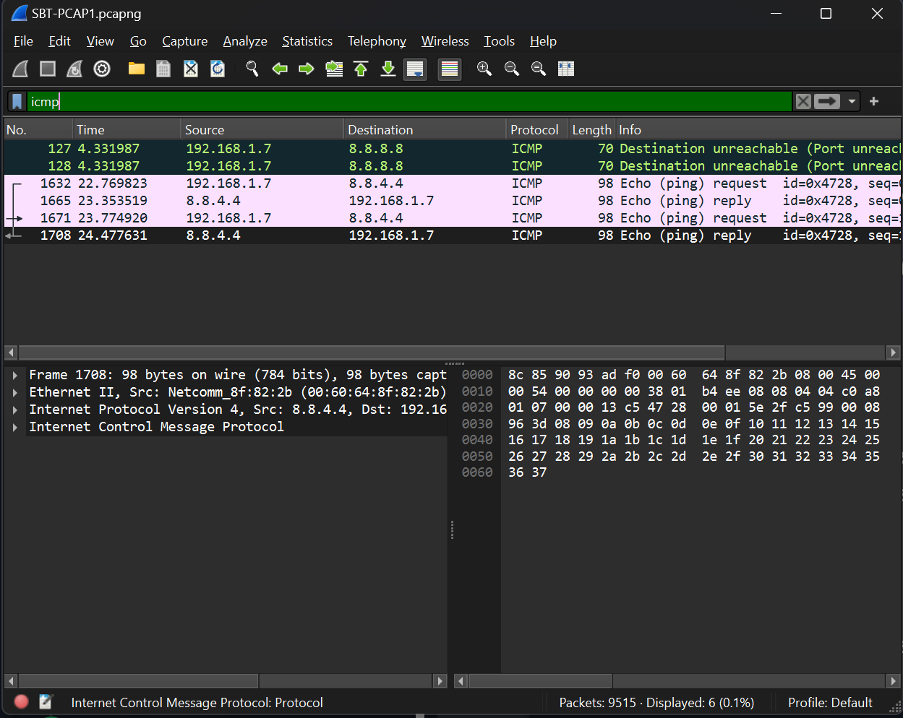We see two ICMP Requests here, and the destination IP address is 8.8.4.4. Hence, the host that was pinged twice is 8.8.4.4.
We need to find the total number of DNS Query Response packets present in the entire pcap file.
A DNS packet has various flags which are set to determine the type of DNS packet, like DNS Query, DNS Query Response, etc. A DNS Query Response packet has the Response Flag set to 1. Hence, I wrote the following Wireshark filter to filter out only DNS Query Response packets:
dns.flags.response == 1
The following image shows the filtered packets.
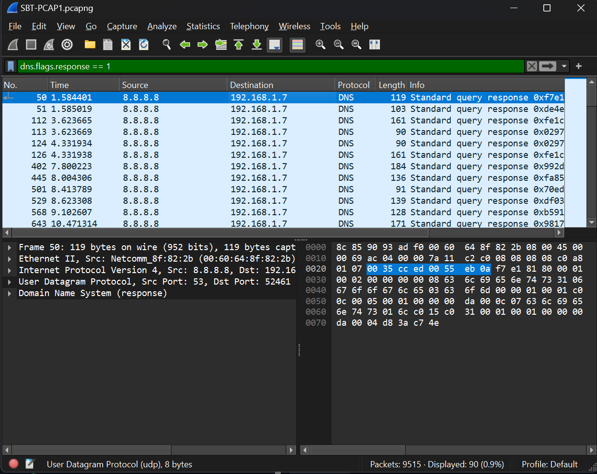At the bottom of the window, we can see that the total number of packets displayed is 90. Hence, the total number of DNS Query Response packets in this pcap is 90.
We need to find the IP address of the host that sent the most number of bytes. For this, we will leverage Wireshark's capture statistics.
Click on Statistics > Endpoints from the menu bar, since we need to view statistics of endpoints.
A new window will pop up displaying endpoint statistics. Since the majority of the communication is through TCP, click on the TCP tab.
Now sort the list by Tx Bytes in descending order as shown in the image below. Tx Bytes refers to transferred bytes, in other words the number of bytes sent from the endpoint. The topmost endpoint after sorting the list will have the most number of bytes sent.
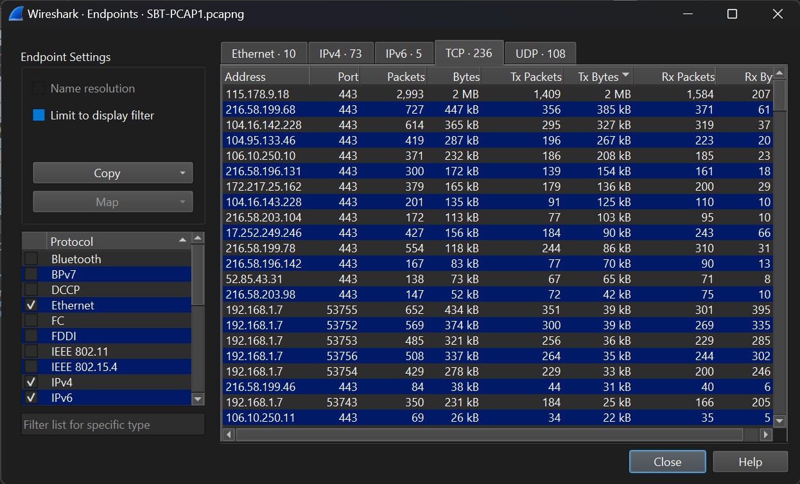The IP address of the endpoint that sent the highest number of bytes is 115.178.9.18.
Now, we have found answers to the requested information.
1. Which protocol was used over port 3942? SSDP
2. What is the IP address of the host that was pinged twice? 8.8.4.4
3. How many DNS query response packets were captured? 90
4. What is the IP address of the host which sent the most number of bytes? 115.178.9.18
Now, let us move on to solving the PCAP 2 Challenge
Let's open the PCAP 2 file in Wireshark. The file is named as SBT-PCAP2.pcap.
Since we need to find the WebAdmin password, I think we are looking at the HTTP traffic. There must be HTTP traffic where the password is exchanged. Since it is HTTP, we can read the exchange as it is un-encrypted. Hence, I wrote the following Wireshark filter to filter out HTTP traffic:
http
The resulting filtered packets are shown in the image below.
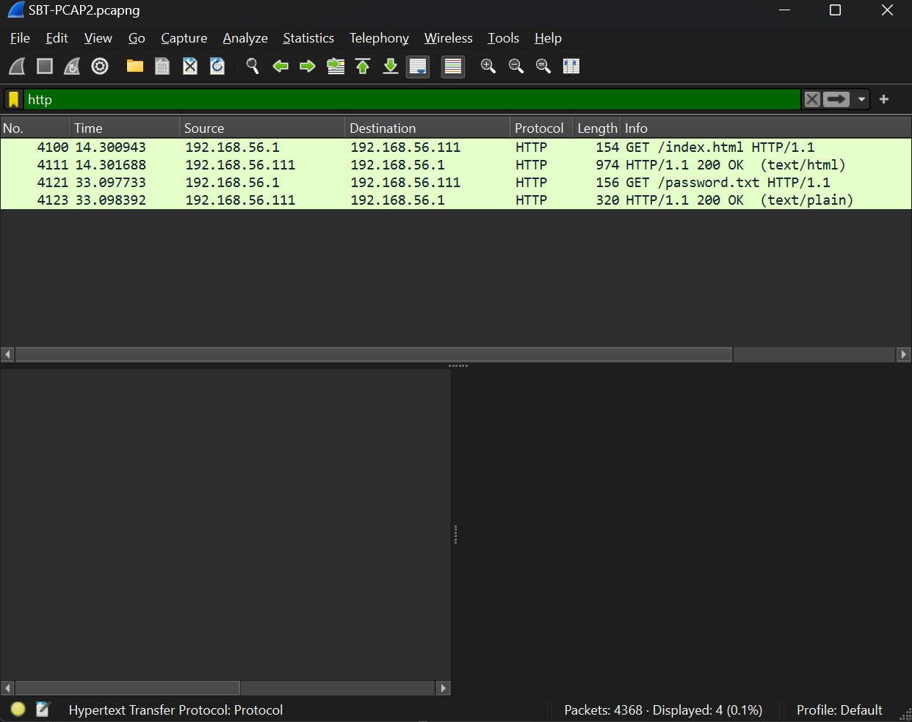We can see that in Packet #4121, the password.txt file has been requested, and Packet #4123 has the response, which is the contents of password.txt file. Let's right-click on Packet #4121, and click on Follow > HTTP Stream. A new window will popup as shown in the image below.
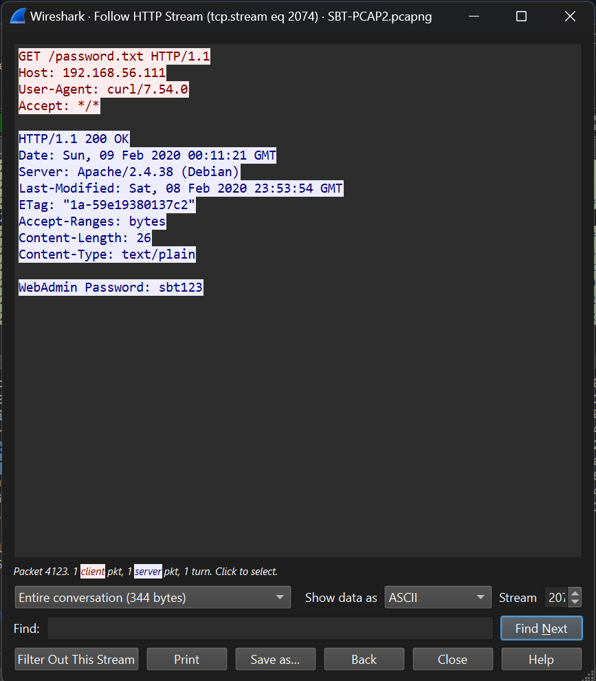Just as I predicted, the WebAdmin password is transmitted in plaintext here, which is sbt123.
Since we need to find the version number of the FTP server, run by the attacker, let's filter the FTP packets with the following Wireshark filter:
ftp
The following image shows the filtered packets and the packet that holds FTP version.
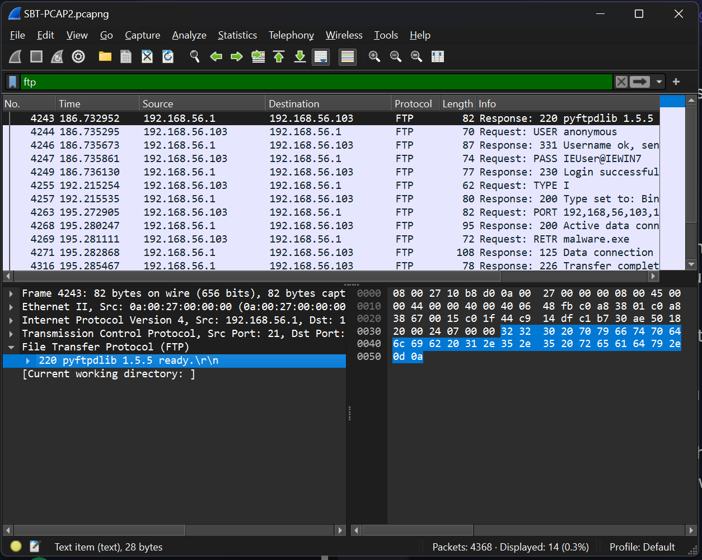It is clear from Packet #4243 that the FTP server used by the attacker is pyftpdlib 1.5.5 with the version number being 1.5.5.
Also, we can deduct that the IP address of the attacker is 192.168.56.1, and since it is likely to communicate with the victim machine, the IP address of the victim machine is 192.168.56.103.
Let's first observe the FTP traffic we saw just now as it holds some interesting information. The following image shows the FTP traffic.
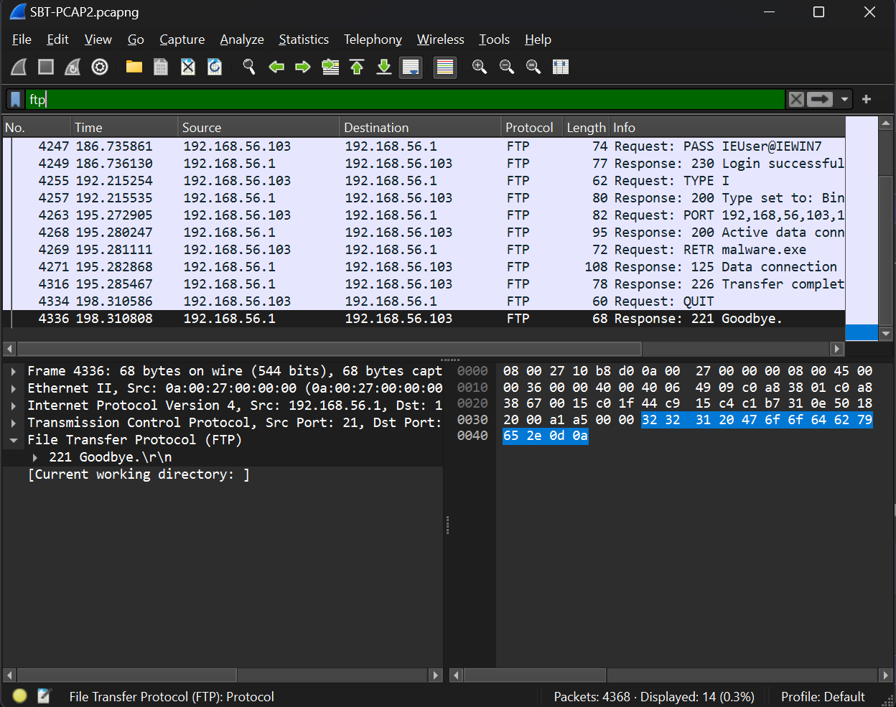The Packet #4336 is the last packet related to FTP traffic. However, if we observe the previous packets, we see that the victim machine with IP address 192.168.56.103 is requesting malware.exe file from the attacker's FTP server. Hence, we can conclude that the victim machine is already under control of the attacker.
Hence, the attacker is connected to the victim machine and also gives it instructions, maybe via commands. The FTP traffic that is generated, is due to the attacker instructing the victim machine to get the malware.exe file from their server. The FTP exchange is taking place during the attack session.
The attacker must be connected to the victim machine via a port, which is running this session. We need to find this port.
Now, we know that the first packet of this FTP traffic is Packet #4243. Let's observe the traffic before this packet. The following image shows the traffic before Packet $4243.
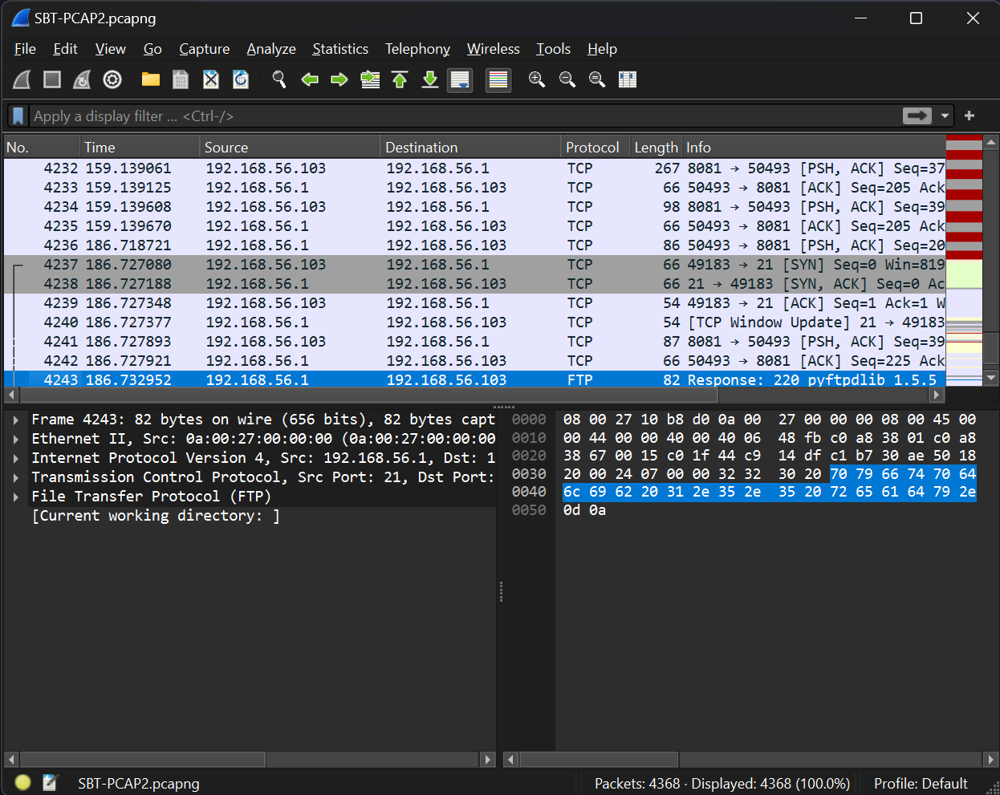We can see that there are bunch of exchanges between the victim machine (192.168.56.103) and the attacker machine (192.168.56.1). We can also see that the attacker machine is using Port 50493 and the victim machine is using Port 8081. Hence, we can say that Port 8081 is the port on the victim machine that the attacker used to gain access to the victim machine.
To confirm this, let's see the traffic after the last packet of FTP (Packet #4336). The following image shows the packets after completion of FTP traffic.
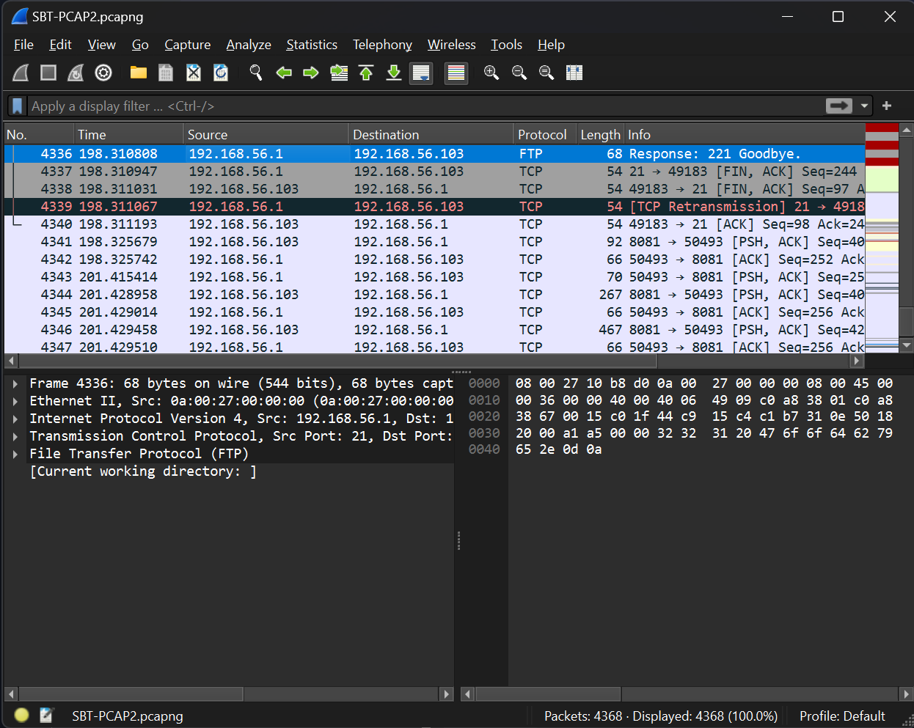We again see the exchange between the victim machine using Port 8081 and the attacker machine using Port 50493.
Hence, the FTP session is a part of the overall attack session. The Wireshark traffic proves this as the FTP traffic is sandwiched between the actual attack session.
In conclusion, the target port is Port 8081.
Since the traffic that is enclosing the FTP traffic is the traffic related to the attack session, we need to observe that. Now, it is difficult to observe through a normal Wireshark window. Hence, we need to follow the TCP stream to get a clear picture.
Right-click on any packet before or after the FTP traffic. I selected the packet after FTP traffic as shown in the image below.
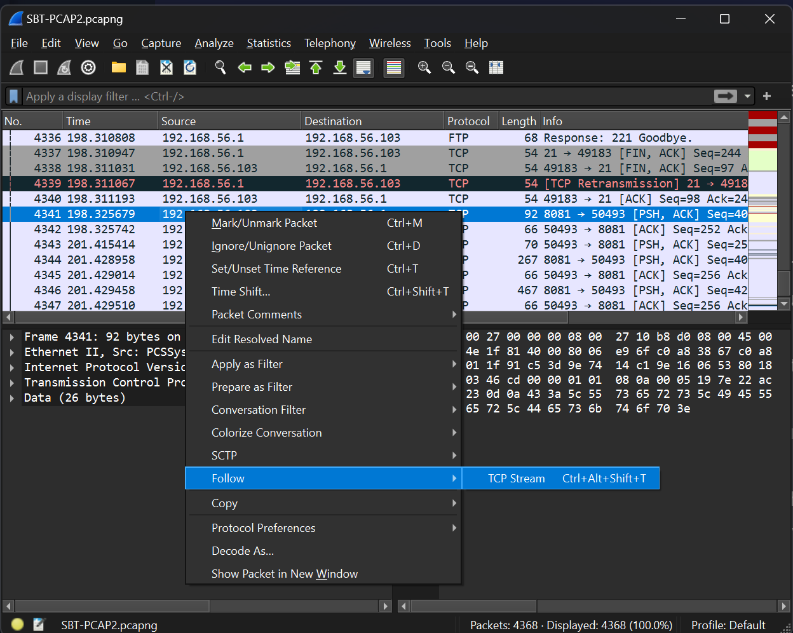It will open a new window, as shown in the image below.
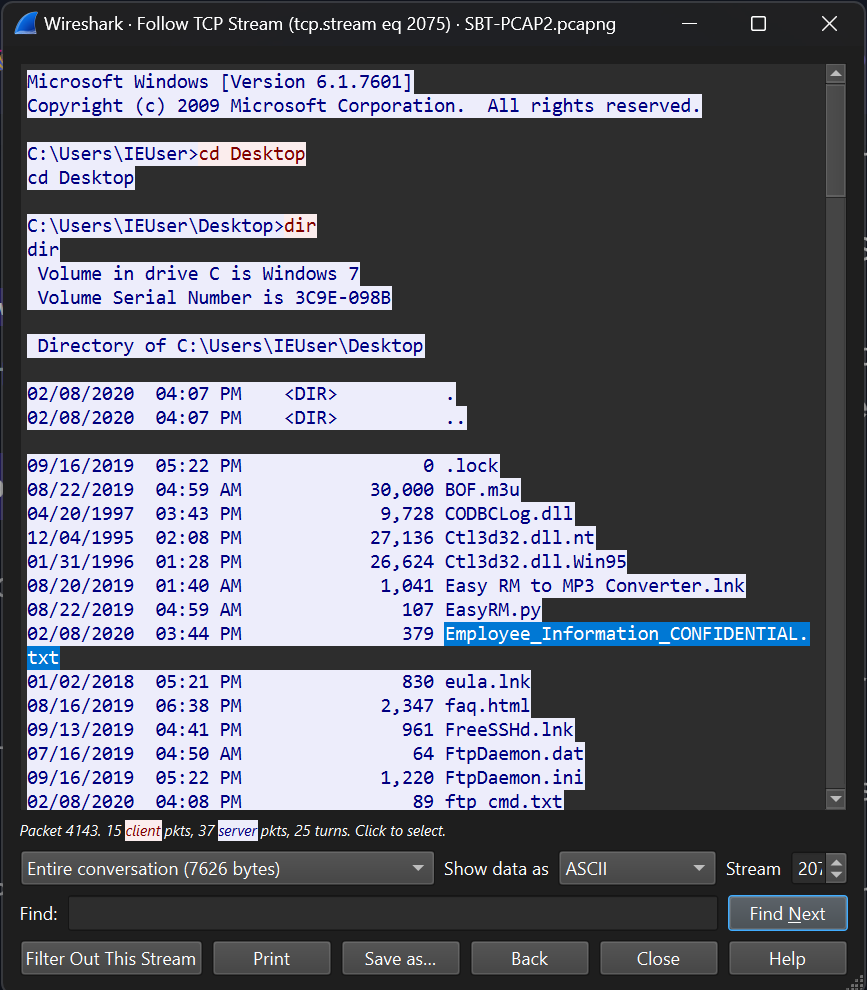We can see the session the attacker is having with the victim's machine. The part with blue font and background is by the victim machine, while the part with red font and background is by the attacker. Hence, we can see that the attacker is interacting with the command prompt of the victim machine.
The attacker has listed the files in the present directory using the dir command. I have highlighted the name of the confidential file, which is Employee_Information_CONFIDENTIAL.txt.
Do not close this window yet, as we will continue to the next task on this window.
As we scroll down the window, we will find the log file that was generated at 4:51 AM, as shown in the image below.
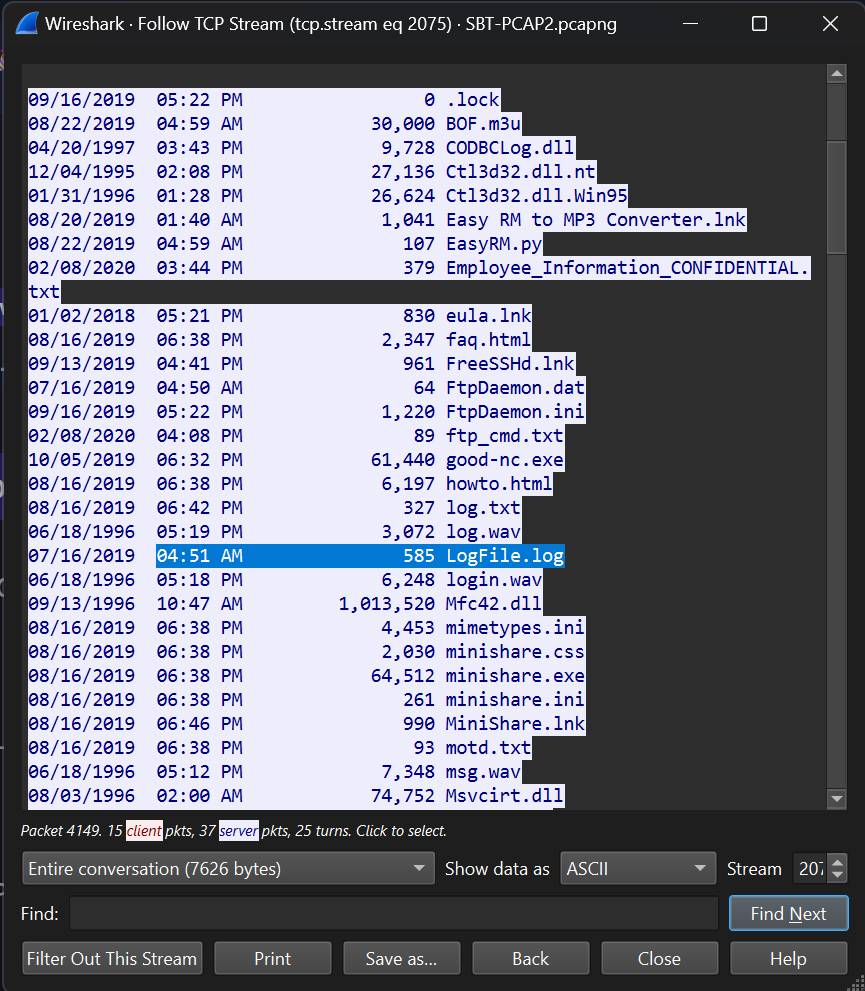Hence, the name of the required log file is LogFile.log.
We have already gathered all the information asked in the challenge. However, I need to observe this TCP Stream further in order to see the complete attack and verify the FTP conversation.
As we further scroll down the window, we see that the attacker is creating a text file containing a script to execute FTP conversation, from connecting to the attacker's FTP server to downloading malware.exe file, as shown in the image below.
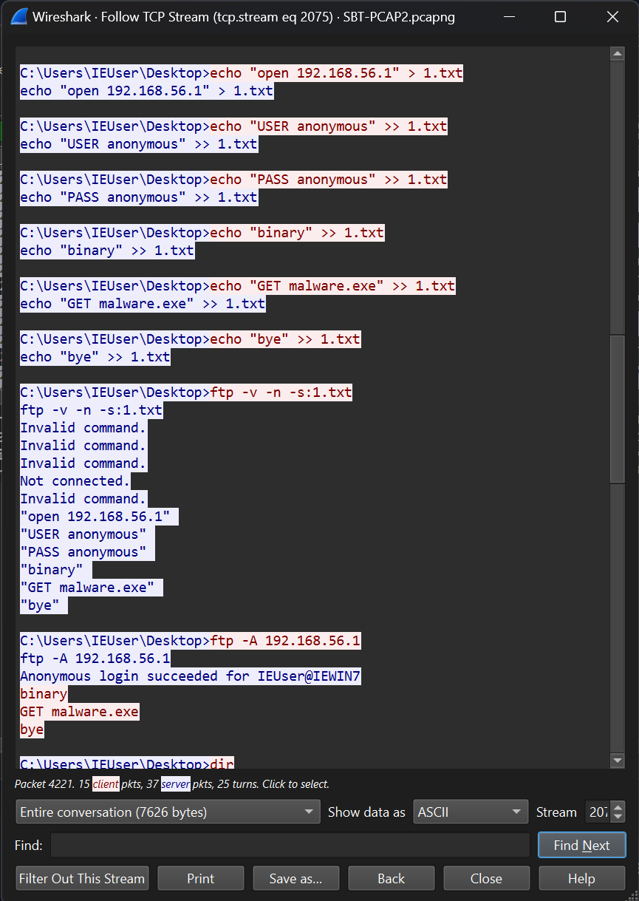Clearly, the attacker saved the script in the 1.txt file and used it as a script to connect to the attacker's FTP server. The file malware.exe is downloaded from this process. The attacker then again lists the files present in the directory.
The following image shows the presence of malware.exe file in the present directory, which was not present in the previous instance of directory listing.
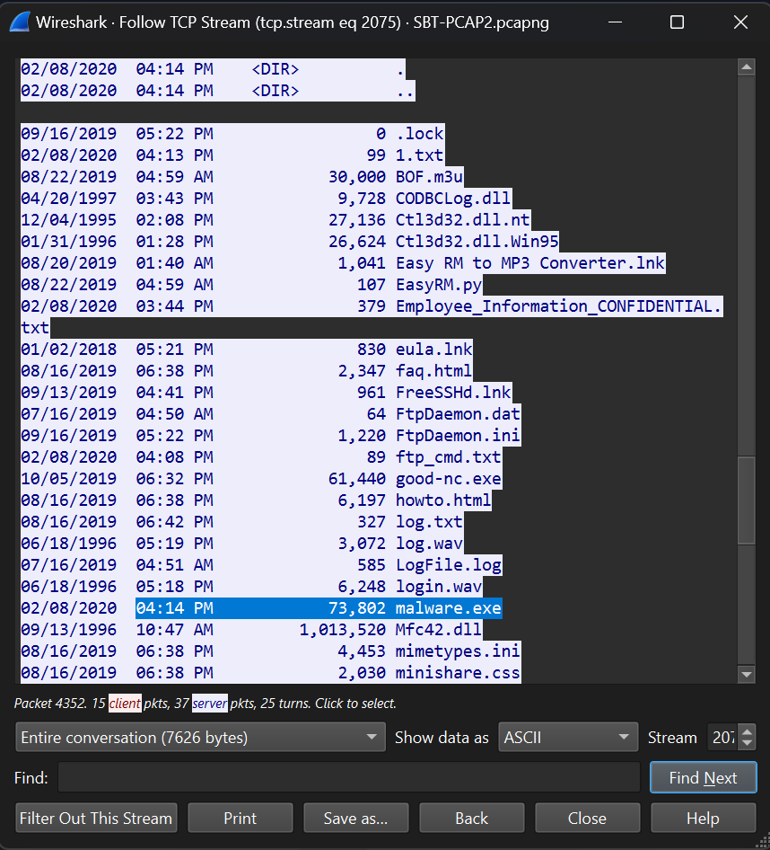The malware.exe file was downloaded on 02/08/2020 4:14 PM.
Hence, the following is a step-by-step process of the attack:
Now, we have found all the information to answer the challenge questions.
1. What is the WebAdmin password? sbt123
2. What is the version number of the attacker's FTP server? 1.5.5
3. Which port was used to gain access to the victim Windows host? 8081
4. What is the name of the confidential file on the Windows host? Employee_Information_CONFIDENTIAL.txt
5. What is the name of the log file that was created at 4:51 AM on the Windows host? LogFile.log